บ่อน้ำจันทร์กลางป่า
ดูบนแผนที่และวิธีไป วางแผนฟาร์ม
ชั้นล่างในป่ากองไฟ · Lv 24–40
มอนในแมพ (8)
| มอน | Lv | ในแมพ | ธาตุ | โซน |
|---|---|---|---|---|
| ภูตถังน้ำบ่อจันทร์ | 24–40 | ≈40 | น้ำ | ขอบบ่อน้ำจันทร์ |
| สไลม์เรืองแสง | 24–38 | ≈28 | พิษ | ขอบบ่อน้ำจันทร์ |
| สไลม์หินตะไคร่ | 24–38 | ≈14 | ดิน | ขอบบ่อน้ำจันทร์ |
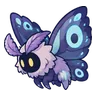 ผีเสื้อราตรีเรืองแสง | 26–40 | ≈12 | ลม | ขอบบ่อน้ำจันทร์ |
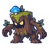 ตอไม้ผี | 26–40 | ≈12 | ดิน | ขอบบ่อน้ำจันทร์ |
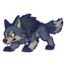 หมาป่าเงาจันทร์ | 26–40 | ≈12 | ดิน | ขอบบ่อน้ำจันทร์ |
| ภูตถังน้ำบ่อจันทร์ · ร่างหมอกชมพู | 26–40 | ≈2 | น้ำ | |
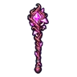 ซิลาส จอมเวทสปอร์ บอสผู้ถูกรากสิง | 48–48 | 1 | พิษ |
≈ จำนวนที่อยู่ในแมพพร้อมกันโดยเฉลี่ย คิดจากไฟล์เกม (จุดเกิดของแมพ × 4 แบ่งตามสัดส่วนของแต่ละตัว) ตายแล้วเกิดใหม่ที่เดิมใน 22 วินาที · ตอนเล่นออนไลน์เซิร์ฟเวอร์เป็นคนเกิดมอน อาจไม่ตรง
อุปกรณ์ที่ดรอปในแมพนี้
| ของ | โอกาสสูงสุด |
|---|---|
| ไม้เท้าเห็ดราก | 0.5% |
| กระดิ่งวิญญาณสไลม์หิน | 0.25% |
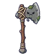 ขวานยักษ์สไลม์หิน | 0.25% |
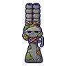 ลูกซองสไลม์หิน | 0.25% |
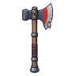 ขวานยักษ์ผ่าซุง | 0.25% |
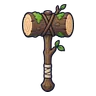 ค้อนยักษ์ท่อนซุง | 0.25% |
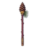 หอกยาวลูกสน | 0.25% |
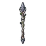 หอกยาวรากตอไม้ผี | 0.25% |
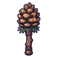 กระบองลูกสน | 0.25% |
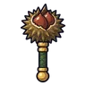 กระบองเกาลัดเหล็ก | 0.25% |
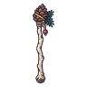 คทาลูกสน | 0.25% |
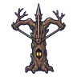 หน้าไม้ตอไม้ผี | 0.25% |
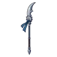 หอกยาวกรงเล็บหมาป่า | 0.25% |
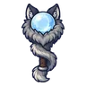 ออร์บขนหมาป่า | 0.25% |
| เกราะหินผา | 0.15% |